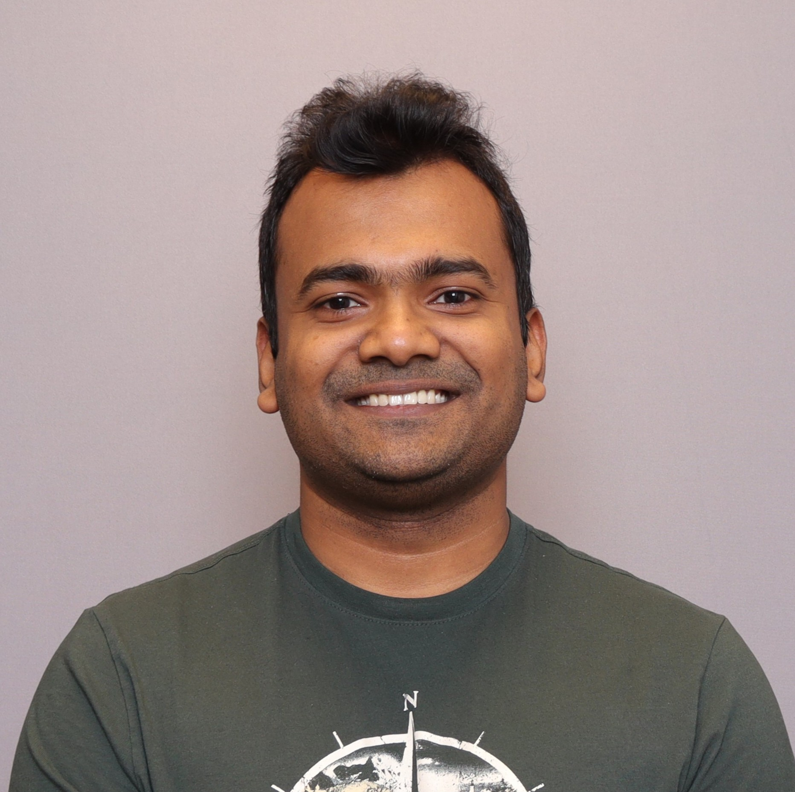

Ariful Islam Anik, PhD
UX Researcher & Designer
PhD, Computer Science · University of Manitoba · Winnipeg, Canada · Open to remote or relocation
I design and study how people interact with AI systems, focusing on what helps them understand, trust, and make better decisions with AI-powered tools. At its core, this is a UX problem: understanding users, prototyping solutions, and testing whether they actually help.
My PhD research at the HCI Lab, University of Manitoba spanned the full UX cycle: designing interfaces, running controlled user studies with 600+ participants, and translating findings into actionable design principles. The work produced 4 peer-reviewed publications at top HCI venues including CHI, IUI, and VL/HCC.
Areas of Expertise
UX Research and Design
End-to-end UX work spanning interface prototyping, user recruitment, study design, and iterative redesign based on findings.
Human-Centered AI
Designing AI systems around what users actually need, with a focus on transparency, trust, and how people evaluate and act on AI outputs.
Human-Computer Interaction
Empirical study of how people interact with technology, using controlled experiments, think-aloud studies, and mixed-methods evaluations to ground design decisions in evidence.
Contact
Open to new opportunities in industry, particularly on teams building AI products. Open to remote or relocation. Feel free to reach out.
anik.mdariful@gmail.com